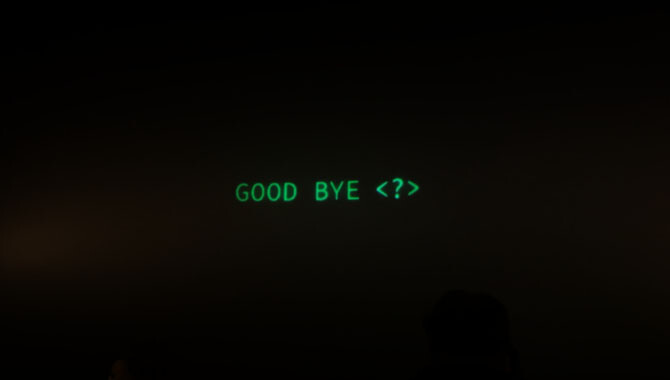

'The Batman': la misteriosa escena post-créditos de la película de Matt Reeves esconde un nuevo enigma para los fans
The Batman
'The Batman', la nueva película de Matt Reeves ofrece una versión nueva y más oscura del icónico superhéroe de DC en la que Robert Pattinson hace de un aún joven Bruce Wayne que ayuda a Jim Gordon (Jeffrey Wright) a resolver una serie de asesinatos en Ciudad Gótica a través de muchos acertijos para resolver el plan de Enigma, pero ¿Tiene escena post créditos la película?
Una escena post-créditos relativa
La respuesta es que no hay una escena propiamente dicha después de los créditos, pero sí hay algo, un easter egg. Si tienes curiosidad, querrás quedarte hasta el final. A diferencia de Marvel, que casi siempre tiene al menos una escena durante o después de los créditos de sus películas que dan pistas de lo que está por venir. Aquí el clip adicional al final está lejos de lo que normalmente esperaríamos. No es una escena rodada que presenta personajes en pantalla. Si tras casi tres horas de película quieres descubrirlo, es cosa tuya, si quieres saberlo, sigue leyendo.
SPOILERS DE LA ESCENA POST-CRÉDITOS DE THE BATMAN
Con bajas expectativas el clip posterior a los créditos de 'The Batman' es divertido a su modo, no importa en términos de lo que significa para una posible secuela, aunque ahora ya sabemos que Matt Reeves confirmó que ha estado en conversaciones para 'The Batman 2', lo que tenemos es una especie de broma que da al público la oportunidad de interactuar con la historia después de salir del cine. En primer lugar aparece solamente una línea de conversación que dice: GOOD BYE (Adiós), como si fuera una conversación de chat con Enigma y este nos despide al salir del cine.
Hasta ese momento, es un guiño sin importancia a la película, dado que ese tipo de conexión misteriosa y creepy con el asesino es parte de la trama, pero si prestamos atención a la pantalla, porque el clip es corto y rápido, hay un pequeño flash que nos deja ver una imagen casi subliminal que nos muestra una web.

Un juego con recompensa
Lo divertido es que si vamos a la web www.rataalada.com nos encontramos con el chat que se encuentra Batman, y nos propone unos cuantos acertijos. La web es también una broma interna de la película puesto que la pista de "el rata alada" es uno de los momentos más divertidos de la película, casi una broma de traductores con la que El pingüino se ríe de Gordon y Batman.

La web tiene varios acertijos que nos pregunta un misterioso personaje que se supone que es el villano de la película, pero sus preguntas son bastante complejas y resolverlas no es tan fácil como parece, y si fallas te intenta poner nervioso, hasta que decide darte una nueva oportunidad y plantea nuevas preguntas.

Robert Pattinson
Bruce Wayne / The Batman
Zoë Kravitz
Selina Kyle

Jeffrey Wright
Lt. James Gordon